Shape Recomposition: Essential Knowledge
This section explains in more detail how shape recomposition in the inline(recompose) and modify operations work.
In a nutshell, shape recomposition restores the connectivity of subdivided shapes, merging the independent pieces of geometry back into one single continuous mesh.
Illustrative Explanation
Merging Subdivided Shapes
Many modeling objectives require splitting a shape into parts, after which further operations should continue on a single unified shape. For example, creating an F-shaped building footprint from a parcel polygon:
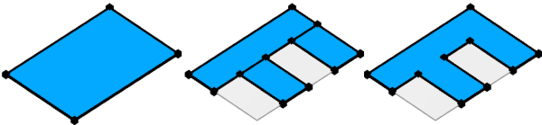
The inline keyword using the recompose parameter enables this. It collects the subdivided shapes back into a single shape and rebuilds adjacency between the separate parts to create one continuous mesh:
- Shared vertices (yellow) are merged.
- Vertices (red) are inserted on polygon boundaries to create shared edges between the parts.
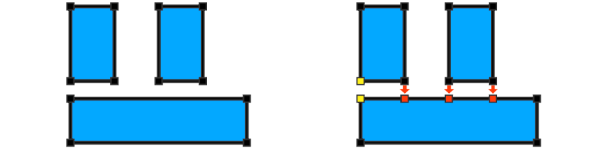
With the connecivity restored through recomposition, we can use cleanupGeometry to remove the shared edges between coplanar faces and create the F-shaped polygon. Full example code:
Init -->
inline(recompose) split(x) { 10: X.
| ~1: split(z) { 10: X. | 10: NIL }* }
cleanupGeometry(all,0)
Connectivity Tracking
Reconnecting subdivided shapes depends only on topological relations. When deriving shapes using inline with the recompose strategy, CGA remembers their connectivity. For example, the rule above generates the following intermediate shapes, where CGA keeps track of shared vertices (yellow and green) and new vertices (red) inserted along shared edges (orange):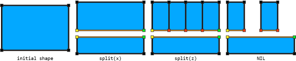
Adjacency is rebuilt solely based on these tracked relations, and regardless of the vertex positions in space. For example, if the lower part is translated sideways, the upper part follows suit: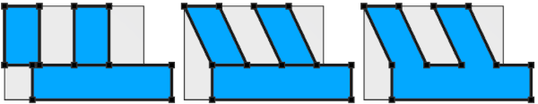
Init -->
inline(recompose) split(x) { 10: t(0,0,8) X.
| ~1: split(z) { 10: X. | 10: NIL }* }
cleanupGeometry(all,0)
See Vertex Merging on how the vertex positions are determined.
Geometry Modifications
Another important use case is to modify (transform, split, delete, tag, extrude, etc.) parts of the current geometry. For example, creating a tapered mass or moving the ridge of a roof: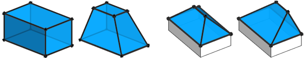
This is enabled with the modify operation:
TaperedMassExample -->
extrude(5)
modify(f) { top: s('0.5,'0.5,0) X. }
RoofExample -->
roofHip(45)
modify(e) { ridge: t(0,0,2) X. }
The modify operation works the same as inline(recompose). In fact, to modify face components, the following two lines of code are equivalent:
- modify(f/m/g) { ... }
- inline(recompose) comp(f/m/g) { ... | all= Keep. }
The modify operation implicitly performs recomposition and always restores the full geometry. Key distinction:
- inline(recompose) comp — recomposes only what it generates. If edge or vertex shapes have been created (e.g. using comp(e/fe) or comp(v/fv)), faces are lost.
- modify — recomposes the modified parts and adds the untouched geometry back, integrating edits on edges and vertices into the original faces.
In the following example, the edges of the input polygon are modified to create insets:
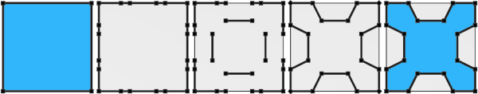
Each edge is first split into five parts, and the middle segment is moved inward. Shape recomposition then automatically reconnects the modified edges and merges them back into the original polygon.
InsetExample -->
modify(fe) { all: split(x) { ~1: X.| 1: X. | 3: t(0,0,-2) X. | 1: X. | ~1: X. } }
Vertex Merging
Shape recomposition reconnects shapes by merging shared vertices (that is, vertices in subdivided shapes that originated from the same source vertex). It respects all applied transformations: shared vertices are merged by summing their individual offsets from the original vertex position.
In the following example, the bottom and right edges are rescaled. This adds two offsets to the shared purple vertex, which are summed and applied to the original position to place the merged vertex. The red and yellow vertices each have a single offset, so their final positions match their positions before recomposition.
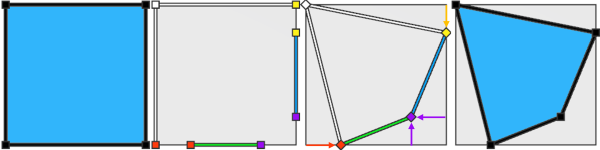
Init -->
modify(fe) { 0: s('0.5,0,0) center(x) X.
| 1: s('0.6,0,0) center(x) X. }
Merging Along Shared Edges
Transformations applied to shared edges are respected by the new vertices inserted along those edges.
In the following example, the shape is split into a bottom and top part. The bottom is scaled and subdivided into thirds, while the top is subdivided into sixths. During recomposition, the new vertices from the top part are interpolated along the transformed edge (red, purple). Shared vertices (yellow, green) and vertices that split the edge at the same relative position (purple) are automatically merged.
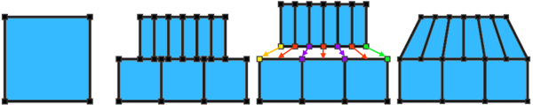
Init --> inline(recompose) split(x) { '0.5: Bottom | '0.5: Top }
Bottom --> s('1,'1,'1.5) center(z) split(z) { '1/3: X. }*
Top --> split(z) { '1/6: X. }*
Similarly, in this example the bottom is rescaled and the top part is split vertically. The new vertices (red) follow the transformation of the shared vertex (green).
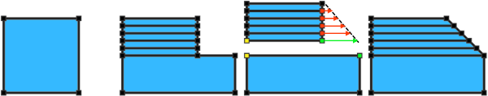
Init --> inline(recompose) split(x) { '0.5: Bottom | '0.5: Top }
Bottom --> s('1,'1,'1.5)
Top --> split(x) { '0.2: X. }*
Accumulating Offsets
When transforming adjacent shapes separately, shape recomposition accumulates these transformations at shared vertices and edges.
| 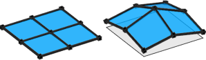 |
In this illustration, each of the four faces is translated upward in a separate shape. When recomposed, the translations of shared vertices are summed: the center vertex accumulates four offsets (one from each shape), the middle border vertices accumulate two, and the corner vertices only one.
FourFaces --> modify(f,noAlign) { all: t(0,1,0) X. }
|
To avoid offset accumulation, apply transformations directly to vertices instead of faces or edges, or use multiple consecutive non-conflicting modify operations.
Currently Unsupported Operations
Connectivity tracking - and therefore shape recompositions - is not yet supported for the following operations:- setback, splitAndSetbackPerimeter, shapeLUO, setbackToArea operations
- innerRectangle operation
- splitArea operation
- envelope operation
- union, subtract, intersect operations
Related
Examples
Shifted Plane
| 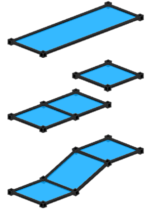 |
The input plane is split into three equal parts, and the right part is moved upward. Shape recomposition reconnects the pieces, creating a slanted middle section.
Init -->
inline(recompose) SplitAndTranslate
SplitAndTranslate -->
split(x) { ~1: X. | ~1: X. | ~1: t(0,2,0) X. }
|
| 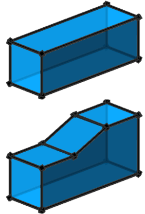 |
Here, the input plane is first extruded, then the top face is modified with the same rule. Shape recomposition reconnects the split parts and reintegrates the modified top face with the side faces.
Note: inline(recompose) is not required anymore, because shape recomposition is always implicitly performed by the modify operation.
Init -->
extrude(5)
modify(f,noAlign) { top: SplitAndTranslate }
SplitAndTranslate -->
split(x) { ~1: X. | ~1: X. | ~1: t(0,2,0) X. }
|
| 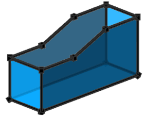 |
In this variant, all split pieces are deleted (using NIL), yet the modifications are still applied to the side faces.
Init -->
extrude(5)
modify(f,noAlign) { top: SplitAndTranslateNIL }
SplitAndTranslateNIL -->
split(x) { ~1: NIL | ~1: NIL | ~1: t(0,2,0) NIL }
|
Random Split And Transform
| 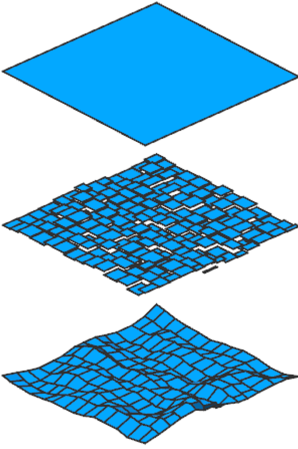 |
In this example, the input polygon is randomly split and each cell translated by a random amount. Shape recomposition reconnects all pieces, forming a continuous surface.
Init -->
inline(recompose) RandomSplitX
RandomSplitX --> split(x) { rand(0.5,1): RandomSplitZ | ~1: RandomSplitX }
RandomSplitZ --> split(z) { rand(0.5,1): Cell | ~1: RandomSplitZ }
Cell --> t(0, rand(-0.2,0.2), 0)
|
Copyright ©2008-2025 Esri R&D Center Zurich. All rights reserved.